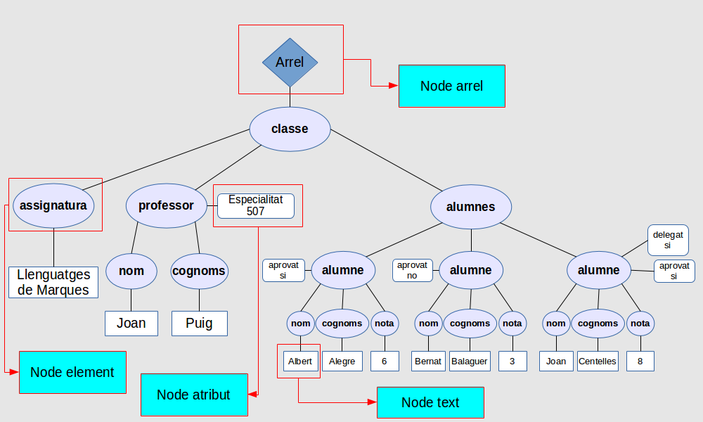

6.1.1 - Vista d'arbre
XPath tracta tots els documents XML des del punt de vista d’un arbre de nodes en el qual hi ha una arrel que no es correspon amb l’arrel del document, sinó que és el propi document (i per tant l'immediatament anterior a l'element arrel del document). Es representa amb el símbol “/”.
A part de l’arrel també hi ha nodes per representar els elements, els atributs, els nodes de dades, els comentaris, les instruccions de procés i els espais de noms.
El següent exemple XML (que el podeu copiar en un document nou de tipus XML anomenat classe.xml; cuideu que siga de tipus xml):
es representarà en XPath amb un arbre com el de la figura:

on els diferents tipus de nodes que trobem són els assenyalats a continuació:

En un arbre XPath els atributs no són considerats nodes fills sinó que són “propietats” del node que els conté i els nodes de dades són nodes sense nom que només contenen les dades.
Llicenciat sota la Llicència Creative Commons Reconeixement NoComercial CompartirIgual 2.5